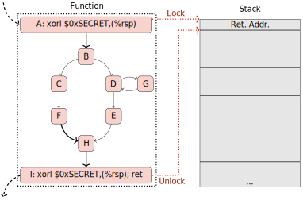

|
GTIRB
v1.10.4
GrammaTech Intermediate Representation for Binaries
|
TLDR; It is very easy to write binary transforms in GTIRB, see gtirb-stack-stamp.
This tutorial demonstrates the development of a binary hardening transform built on GTIRB (a data structure that represents binary executables). We implement stack stamping (a simple return oriented programming, or ROP, defense) as a GTIRB-to-GTIRB transformation. We leverage the ddisasm front-end to disassemble binaries to GTIRB and the gtirb-pprinter back-end to produce a new hardened executable from the stack stamped GTIRB. In practice the stack-stamp transform could be chained with other GTIRB binary analysis or transformation passes. Implementations of the stack stamping transform are given in all three GTIRB API languages; Python API/stack_stamp.py, C++ API/gtirb_stack_stamp.hpp, and Common Lisp API/gtirb-stack-stamp.lisp.
This document walks through the whole process of writing and applying the stack stamping binary ROP protection in following steps:
gtirb@grammatech.com.The following should be sufficient to install the required GTIRB libraries and utilities (for complete installation instructions see GTIRB::Install).
Windows:
> NOTE: Windows users are warned that (1) you can't assemble and > link your rewritten ELF file on Windows unless you have the > required Linux build tool installed (2) the Common Lisp APIs > are not tested on Windows – although they might work.
ddisasm-artifacts.zip, gtirb-artifacts.zip, and gtirb-pprinter-artifacts.zip from https://grammatech.github.io/gtirb/pkgs/windows-release;PATH environment variable. (Alternatively, provide the full path when you invoke the extracted executables.)sudo apt-get install software-properties-common sudo add-apt-repository ppa:maarten-fonville/protobuf sudo add-apt-repository ppa:mhier/libboost-latest echo "deb https://grammatech.github.io/gtirb/pkgs/xenial ./" | sudo tee -a /etc/apt/sources.list.d/gtirb.list sudo apt-get update sudo apt-get install --allow-unauthenticated libgtirb-dev gtirb-pprinter ddisasm
sudo apt-get install software-properties-common sudo add-apt-repository ppa:mhier/libboost-latest echo "deb [trusted=yes] https://grammatech.github.io/gtirb/pkgs/bionic ./" | sudo tee -a /etc/apt/sources.list.d/gtirb.list sudo apt-get update sudo apt-get install libgtirb-dev gtirb-pprinter ddisasm
sudo apt-get install software-properties-common echo "deb [trusted=yes] https://grammatech.github.io/gtirb/pkgs/focal ./" | sudo tee -a /etc/apt/sources.list.d/gtirb.list sudo apt-get update sudo apt-get install libgtirb-dev gtirb-pprinter ddisasm
pacman packages from https://grammatech.github.io/gtirb/pkgs/arch or install using the popular aur helper yay, yay -Sy gtirb-git gtirb-pprinter-git ddisasm-git
git clone https://github.com/keystone-engine/keystone.git cd keystone mkdir build cd build ../make-share.sh make install
lib/ is a library directory.include/ is an include directory.gtirb and proto libraries (Windows: gtirb.lib, proto.lib; Linux: gtirb.so, proto.so).pip3 install gtirb gtirb-functions gtirb-capstone
~/quicklisp/local-projects directory (the versions in quicklisp don't yet have some important bugfixes) cd ~/quicklisp/local-projects git clone https://github.com/brown/protobuf git clone --single-branch --branch quicklisp https://github.com/grammatech/gtirb git clone https://github.com/grammatech/gtirb-capstone git clone https://github.com/grammatech/gtirb-functions
(ql:quickload '(:gtirb :gtirb-functions :gtirb-capstone))
GrammaTech's open-source GTIRB tooling supports disassembly of ELF binaries only.
The example used in this tutorial is a Linux ls binary. If you prefer, you can work with a different ELF binary: just amend the command lines as necessary to accommodate any file name differences.
If you are on a Linux system, you can analyze your system ls. For Windows users, we have provided additional instructions for obtaining a Linux ls binary.
Ubuntu 16, Ubuntu18, Ubuntu20, Arch Linux:
ddisasm $(which ls) --ir ls.gtirb
Windows:
ls binary? (For example, can you copy one from another local system?)Use a tool such as 7-Zip to extract /bin/ls from the package, then copy it to a suitable working directory.
(If your tool does not support selective extraction, unpack the entire package to a temporary location, then copy /bin/ls to your working directory.)
If you are not able to successfully analyze your chosen binary, please open an issue to let us know.
Stack stamping is a technique to help mitigate ROP style attacks. This is done by 'stamping' (xoring with a random number) the return address on the stack at the beginning of every function, thus encrypting it. At the end of the function, before the return address is popped off the stack and used, it is decrypted by xoring it again with the same random number. This can be a very efficient protection. Because it only requires an xor instruction this implementation requires no registers, and while flags are affected, they are only affected at function entry/exits where they do not need to be preserved. The effect of encrypting and decrypting the return address on the stack like this is that ROP payloads become much more difficult to write. The attacker would have to know the random xor number for every return to encrypt the return addresses in the payload. These numbers could easily be regenerated for every instance of a deployed binary making generic payloads impossible.

Regardless of the implementation language the mechanics of this transform will be the same – we'll write a GTIRB-to-GTIRB rewriting pass (the design of GTIRB is similar to LLVM in that it leverages stand-alone passes for analysis or transformation).
For each function f that has a single entry and single return.
Build a random key k_f for f.
On entry to f, encrypt the return address using k_f.
On exit from f, decrypt the return address using k_f.
Implement the transform, using the GTIRB manual as a reference.
If you're developing in Python or Common Lisp you can work directly in a Read Eval Print Loop (REPL), or use it to prototype a stand-alone implementation.
gtirb API and then loading your ls.gtirb file. For Common Lisp and Python, you will also need to import the gtirb-functions and gtirb-capstone APIs.from gtirb import *
import gtirb_functions
import gtirb_capstone
ir = IR.load_protobuf("ls.gtirb")
#include <gtirb.hpp>
gtirb::Context Ctx;
std::ifstream File("ls.gtirb");
gtirb::IR* Ir = *gtirb::IR::load(Ctx, File);
(mapcar #'use-package '(:gtirb :gtirb-capstone :gtirb-functions)) (defparameter *ir* (read-gtirb "ls.gtirb"))
gtirb-functions API functionality (Python) to obtain the set of recovered functions, and the sets of entry and exit blocks for each function.ddisasm: use the gtirb API to access the information in these tables.gtirb-functions API functionality (Common Lisp) to obtain the set of recovered functions, and the sets of entry and exit blocks for each function.ls.gtirb.ls-ss.gtirb.ir.save_protobuf("ls-ss.gtirb")
std::ofstream File("ls-ss.gtirb");
Ir->save(File);
(write-gtirb *ir* "ls-ss.gtirb")
If you're interested in applying this transform but not writing it yourself you can try our implementation available at https://github.com/GrammaTech/gtirb-stack-stamp.
python setup.py install python -m gtirb_stack_stamp /tmp/ls.gtirb --outfile /tmp/ls-ss.gtirb --rebuild /tmp/ls-ss
mkdir build cmake -Bbuild make -Cbuild ./build/bin/gtirb-stack-stamp -i /tmp/ls.gtirb -o /tmp/ls-ss.gtirb
sbcl --eval '(ql:quickload :gtirb-stack-stamp)' --eval '(asdf:make :gtirb-stack-stamp :type :program :monolithic t)' ./stack-stamp -g /tmp/ls-ss.gtirb -b /tmp/ls-ss
The final step is to use the GTIRB pretty printer to convert your GTIRB representation to a new binary.
NOTE: Although you can pretty-print GTIRB to assembly on Windows you can't actually assemble or link the assembler to an ELF file on Windows because the required
asandldcommands are typically not installed. So this is likely the end of the road for users without access to a Linux machine.
gtirb-pprinter ls-ss.gtirb --skip-section .eh_frame \
--asm ls.ss.s \
--binary ls.ss
Try running the new binary. Its behavior should be indistinguishable from the original.
(You will not be able to do this on Windows. However, if you have access to a Linux system, you can copy your new binary there and try it out.)
Ghidra is a reverse engineering framework developed by the National Security Agency (NSA). With a GTIRB plug-in, Ghidra offers a useful GUI for examining the differences between GTIRB files.
Procedure:
ls.gtirb and double-click it to open a Code Browser.When prompted to analyze it, hit "Yes" and select "Disassemble Entry Points" (only).
This will populate the listing with disassembly for all functions.
ls-ss.gtirbSkip the precondition checks and click Finish.
This will open source and destination tools, which you can minimize as we don't need them.
Click Next and Finish.
The Version Tracking Matches window will be populated with a list of matches. (If you don't see a Version Tracking Matches window, go to Window in the top menu and select Version Tracking Matches).